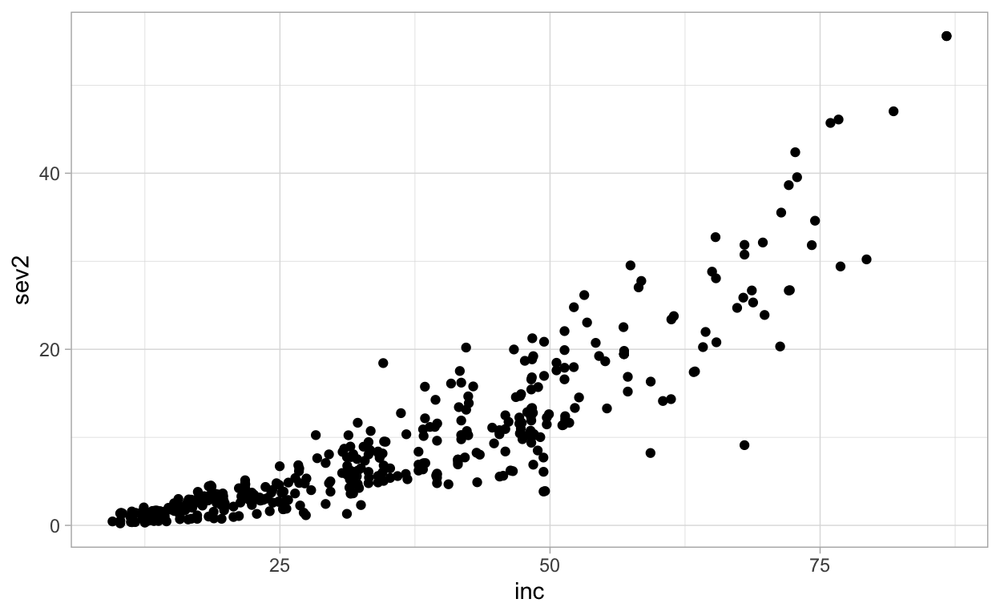
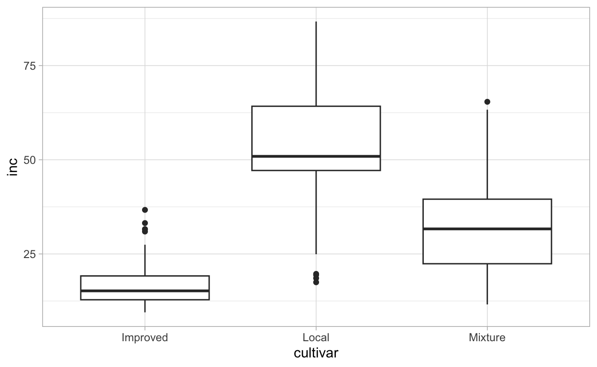
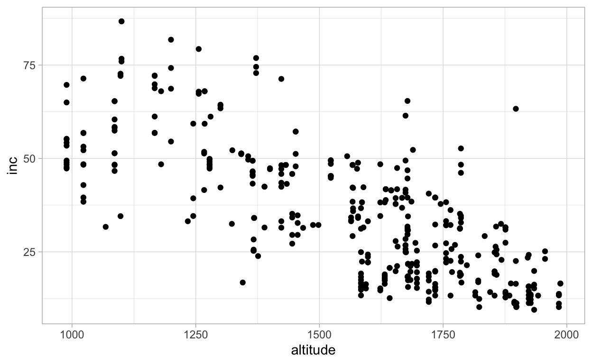
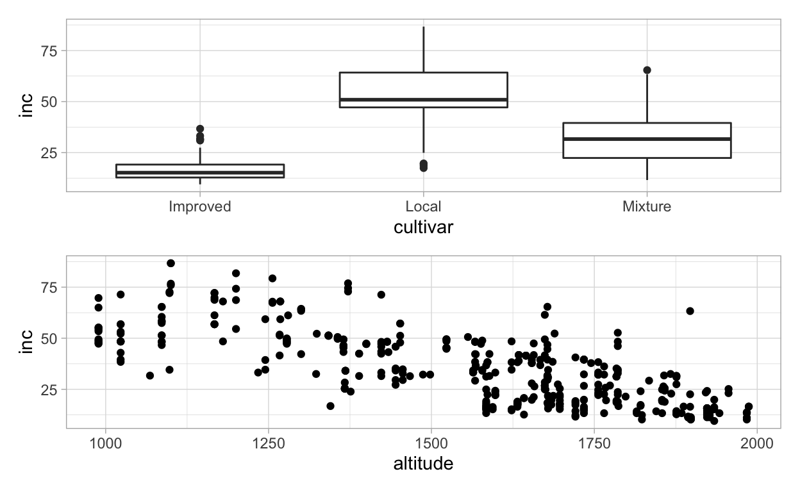
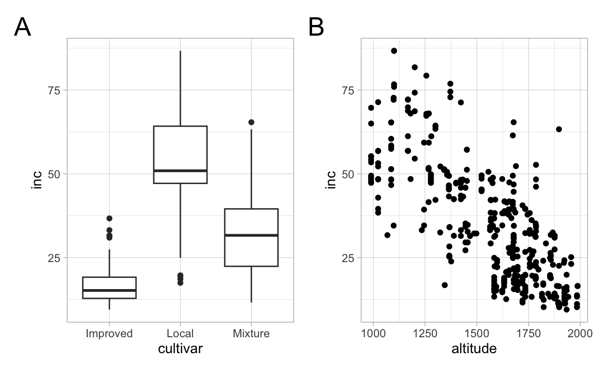
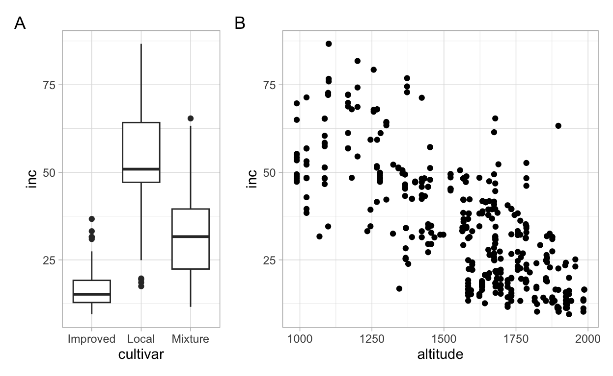
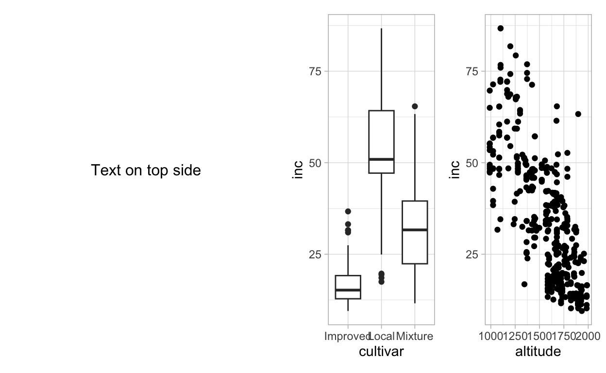
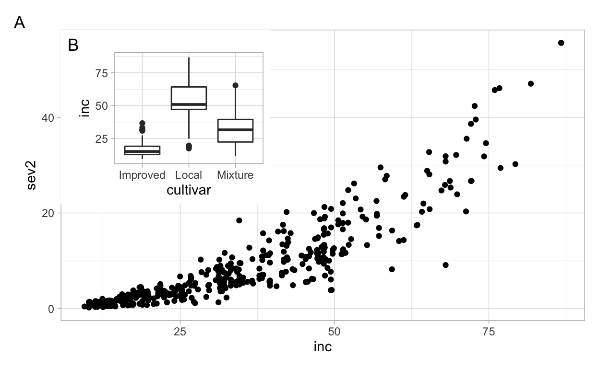

Today’s topic
Hello! this is our inaugural post for the #R4PlantPath blog post category. Every week or so we will be sharing one piece of R code that (we hope!) you will find useful for analyzing or communicating plant pathology research and data more effectively and in a reproducible manner, using R.

I will start with a technique that has been very useful, at least for me, and that many people usually make use of multiple software to prepare: the multi panel plot figure. This was the past me, not so many years ago. After learning how to produce plots in R, the next step was to combine them in an image editor software (sounds familiar to you?).
This approach works, of course, but it can be counterproductive every time the plot is updated (or a colleague requests a change) and the whole figure should be re-designed. It can be even more complicated and laborious if the manual tweaking is extensive. In brief, it is neither time-effective nor reproducible.
My multi panel plotting game changed when I discovered the plot_grid function of the cowplot package (or in short, pkg). I used it until I discovered another game changer, the patchwork package. Both packages are great options and it is really a matter of preference. I like the simplicity of the patchwork syntax.
Who is this post for?
I assume that you are an R (read Rstudio and tidyverse here) user and are capable of producing a ggplot object. I will focus mainly on the specifics of how to use the patchwork package to produce the most common type of figures and save them in the PNG format. Please refer to several other good tutorials on the web on how to code using tidyverse and create great visualizations using ggplot.
Would you like some coffee?
Using a plant pathology data set - Yay! No iris or penguins allowed here!. I may be biased (as coauthor of the paper) but the data set we are going to use is very rich to explore and demonstrate many ways to produce ggplots and different analyses (we will look at these in future posts!). Plant disease datasets may be more interesting for plant pathologists than for other botanists, biologists and other scientists in general interested in playing with datasets for learning R.
The data set was gathered from a survey for one of the most important diseases globally, coffee leaf rust, caused by Hemileia vastatrix. A large survey was conducted in Ethiopia to map the incidence and severity of the disease during one season. You can head over to the paper for more details if you would like to understand the work at an advance level.
The data set is available online, in a github repo, as a csv file. We will import the coffee leaf rust data into the R environment and store this as a data frame object named mycoffee.
Single plots first
In the mycoffee data frame, there are two coffee rust-related variables (responses) of interest for our investigation, inc and sev2, incidence and severity, both are measured as a percentage; and there is a strong association between them.
theme_set(theme_light()) # for a global ggplot theme
p_cor <- mycoffee %>%
ggplot(aes(inc, sev2))+
geom_point()
p_cor

Let’s make two other plots, one for cultivar (factor variable) and other for altitude (numeric variable), relating each with inc. As we did for the first plots, we need to assign each plot to a ggplot object before we can produce the multi panel figure.
p_cult <- mycoffee %>%
ggplot(aes(cultivar, inc))+
geom_boxplot()
p_cult

p_alt <- mycoffee %>%
ggplot(aes(altitude, inc))+
geom_point()
p_alt

Two-panel plot
Now that we have the two ggplot objects, we can use the patchwork pkg to produce a two-plot panel - the easiest way I’ve seen with the simplest layout, side by side.
Is that it? Yes! just load the package and the | character will do the magic when connecting the two ggplot objects. But there is more, actually much more if you look at the documentation of the package. Let’s keep exploring a few cool features for our nice coffee rust data set. Now we switch to the / character to see one plot on top of another.
p_cult / p_alt

Three-panel plot
What about a three-panel plot… can we also do this? Yes, just follow the same logic.
p_cor /
(p_cult | p_alt )
# try yourself:
# p_cor | p_cult | p_alt
Plot annotation
For scientific publishing, we need to refer to each plot by using a tag, usually using letters of the alphabet. The plot_annotation function comes in handy to have the tag_levels defined.
p1 <- p_cult | p_alt
p1 + plot_annotation(tag_levels = 'A')
# Try yourself these alternatives:
# p1 + plot_annotation(tag_levels = 'a')
Is the default font size too small? This is no problem, we can customize the text size element of the theme.
p1 + plot_annotation(tag_levels = 'A') &
theme(plot.tag = element_text(size = 20))

Plot layout
By default, each plot occupies the same space in the panel. Sometimes we want them to occupy different spaces, right… This can be handled using the plot_layout function and the width argument. Let’s say we want the scatter plot to be double the width of the boxplot. The logic is similar when arranging the plots in a single column and two rows, but using the height argument.
p1 + plot_annotation(tag_levels = "A")+
plot_layout(widths = c(0.5, 1))

wrap_elements(grid::textGrob('Text on top side')) + p1

Inset plots
Finally, we want to display a large plot, but the other plot should be an inset of this one.
p_cor +
inset_element(p_cult,
left = 0,
bottom = 0.4,
right = 0.4,
top = 1)+
theme_light()+
plot_annotation(tag_levels = "A")

Saving the plots
Saving is the same as with any ggplot, using the ggsave function and setting the width and height, as well as the dpi argument. Everything working, the PNG file should appear in the working directory. If the figure is not at the desired size at first, I keep modifying the width and height, until you are happy with your visualization.
p1 +
plot_annotation(tag_levels = "A")+
ggsave("mymultipanel1.png", width = 8, height = 3, dpi = 300 )
That is it, we hope you find this useful, and of course these are very basic plots that can be heavily customized, but this is beyond my intent with this post, keep an eye our for future posts. Here is a list of suggested tutorials on patchwork.